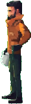
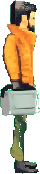
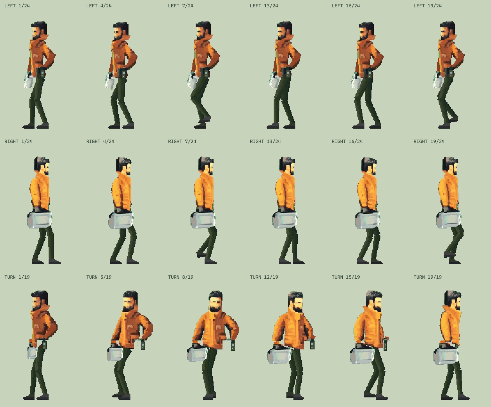

动作制作 / 第一个可检查的往返
走出去，再走回来。
同一个人，两件随身器物。先看脚下是否站得住，再看身体怎样带着重量前行。
此动作版本美术未通过：人物身份、头颈肩连接、裤腿材质与转身光色仍有问题。当前回到完整站姿精修与对照；下方保留旧动作以便检查。
起步，停步，换步转身，返回。
原画人物高约 174px减少动态偏好下默认停在静帧，仍可手动播放或逐帧查看。
近看
2× 像素对照身份，而不是只看动作量
衣装与器物，沿用同一个人。
原画是身份基准。两侧造型取自已有朝向视频，补齐关节边缘、裤腿和被遮住的袖面后，离线输出完整帧。
本轮重点：动作随实际路程推进，负重手限制摆幅，停步后换脚转向。裤腿色块、转身时的衣身与工具箱轮廓仍列入美术评审。
此处先在水平地面检查动作。坡度、透视缩放、持书与端口作业留待这一小样通过后继续。



停下来，一帧帧看
接触、承重、经过、抬升。
每侧 24 帧行走，转身 19 帧。下图选取两侧相同相位和转身过程；播放控制可查看完整序列。
